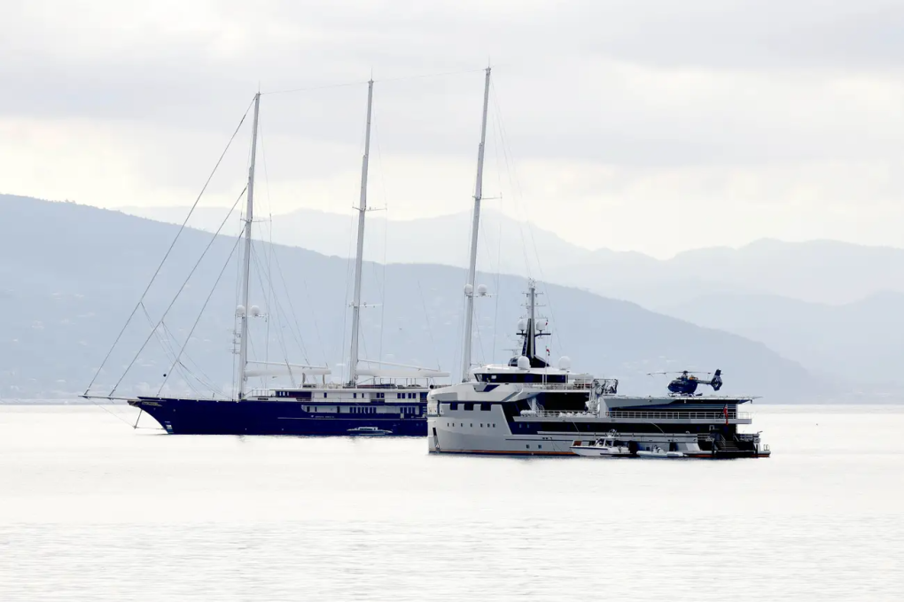
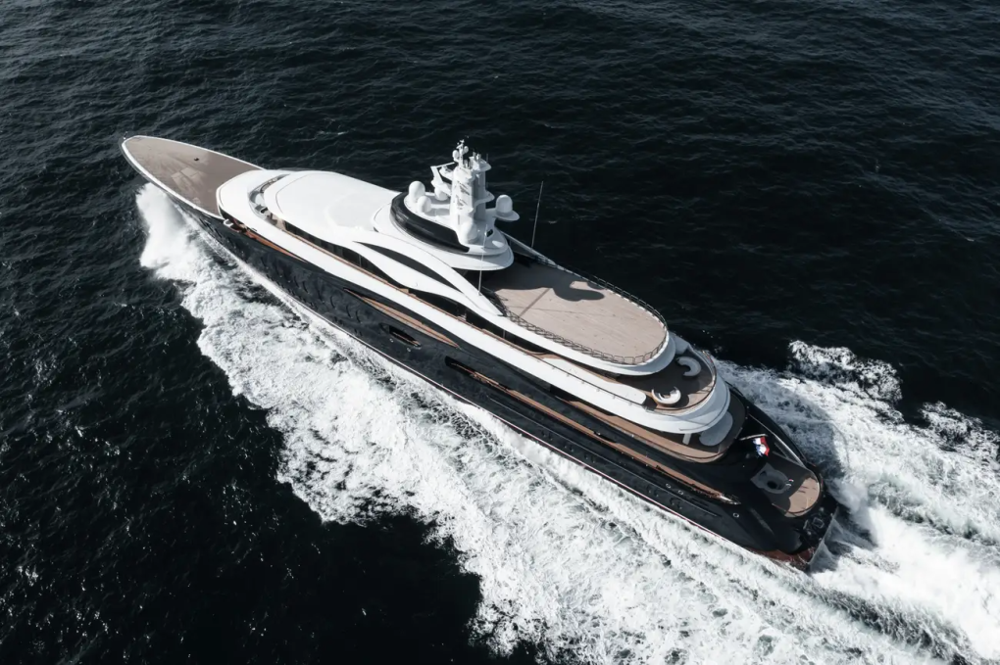
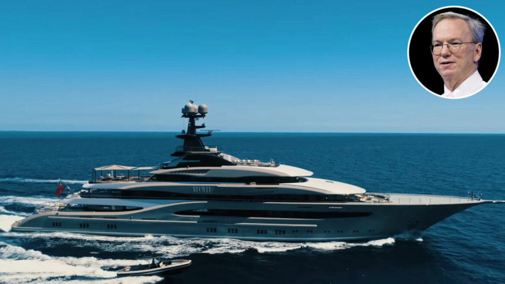
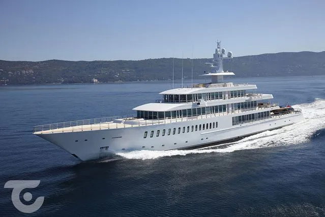

Tỷ phú công nghệ sở hữu du thuyền trăm triệu USD
CEO Meta Mark Zuckerberg, nhà sáng lập Amazon Jeff Bezos, nhà sáng lập Oracle Larry Ellison sở hữu siêu du
thuyền có giá cả trăm triệu USD
Sở hữu du thuyền là cách thể hiện sự thành công và giàu có
, Giovanna Vitelli, Phó chủ tịch của tập
đoàn Azimut Benetti,
nhà sản xuất siêu du thuyền lớn nhất thế giới, nói với Business Insider. Mark Zuckerberg của Meta là cái tên mới
nhất nhập hội
tỷ phú công nghệ sở hữu du thuyền
Siêu du thuyền được định nghĩa là những thuyền có chiều dài từ 70 mét,
hầu hết được chế tạo theo yêu cầu riêng và thường có giá chín con số tính theo tiền USD.
Jeff Bezos: Koru và Abeona
Người sáng lập Amazon Jeff Bezos có hai siêu du
thuyền, gồm Koru dài 127 mét trị giá 500 triệu USD, từng thu hút sự chú ý năm ngoái khi băng qua Địa Trung
Hải. Trước đó, nó được đóng ở Hà Lan và từng gây phẫn nộ khi
Jeff Bezos muốn tháo cây cầu lịch sử ở Rotterdam để thuyền đi qua

Siêu du thuyền Koru (trái) và Abeona (phải). Ảnh:
GC
Koru có kích thước đồ sộ và thiết kế độc đáo, là du thuyền buồm lớn nhất và cao nhất thế giới với ba cột buồm
tới 70 mét.
Bezos thường dùng để đón tiếp những người bạn nổi tiếng của mình và của bạn gái Lauren Sanchez.
Cặp đôi được cho là đã tổ chức tiệc đính hôn trên đây, với khách mời có Bill Gates, Ari Emanuel và Leonardo
DiCaprio
Một siêu du thuyền khác của Bezos là Abeona, dài 75 mét, có giá 100 triệu USD, được bổ sung đầu năm nay để
chiều lòng bạn gái Sanchez. Không gian du thuyền đủ chỗ cho 45 người,
gồm cả thủy thủ đoàn và khách, kèm bãi đỗ trực thăng phía trên
Mark Zuckerberg: Launchpad
Đầu năm, giới am hiểu siêu du thuyền cho biết CEO Meta đã mua Launchpad,
dài 118 mét và ban đầu được thiết kế cho một doanh nhân Nga

Ảnh chụp siêu du thuyền Launchpad của Zuckerberg. Ảnh:
SuperYachtTimes
Siêu du thuyền có chuyến đi đầu tiên vào tháng 3 từ Gibraltar đến St. Maarten và neo ở Fort Lauderdale,
Florida.
Thông tin chi tiết không được tiết lộ, ngoài việc nó có bể bơi lớn, sân bay trực thăng và có giá chín con
số
.
Eric Schmidt: Whisper
Cựu chủ tịch Google năm ngoái đã mua lại Kismet,
siêu du thuyền dài 95 mét do Lürssen đóng và thuộc sở hữu của tỷ phú Shahid Khan của Jacksonville Jaguar.
Schmidt sau đó đổi tên Kismet thành Whisper.

Siêu du thuyền Whisper của Eric Schmidt. Ảnh: Luxury Launches
Whisper có thể chứa 12 khách và thủy thủ đoàn 28 người, có boong chính với bể sục riêng, spa đầy đủ dịch vụ,
bể bơi phân làn, rạp chiếu phim và lò sưởi ngoài trời.
Giá siêu du thuyền không được tiết lộ, nhưng được dự đoán khoảng 161 triệu USD
Larry Ellison: Musashi
Người sáng lập hãng phần mềm Oracle Larry Ellison đã mua một số du thuyền trong nhiều năm, như Katana, Ronin
và
Rising Sun, nhưng cũng đã bán chúng cho người khác. Năm 2011,
ông mua Musashi với giá 160 triệu USD từ hãng du thuyền Feadship và sử dụng nó đến nay.

Siêu du thuyền Musashi. Ảnh:
SuperYachtTimes
Được đặt theo tên của một chiến binh samurai nổi tiếng, Musashi dài 88 mét, thiết kế lấy cảm hứng từ Nhật Bản
và
được trang bị hàng loạt tiện nghi như thang máy,
hồ bơi, thẩm mỹ viện, phòng tập thể dục và sân bóng rổ.
Sergey Brin: Dragonfly
Nhà đồng sáng lập Google Sergey Brin xây dựng một đội du thuyền của riêng mình có tên Fly Fleet,
trong đó siêu du thuyền lớn nhất là Dragonfly - theo tên một sản phẩm bí mật Google từng triển khai. Một số
du thuyền khác nhỏ hơn là Butterfly, Firefly và Jet Skis.

Siêu du thuyền Dragonfly. Ảnh:
SuperYachtTimes
Theo SuperYachtTimes, Dragonfly dài 73 mét, được đóng bởi nhà máy đóng tàu Silver Yachts của Australia và có giá khoảng 80-100 triệu USD,
có thể chở tối đa 18 khách và 16 thành viên thủy thủ đoàn. Brin hiện thuê đội ngũ 50 nhân viên toàn thời gian để quản lý, chỉ đạo và duy trì hoạt động của Fly Fleet.
Bảo Lâm